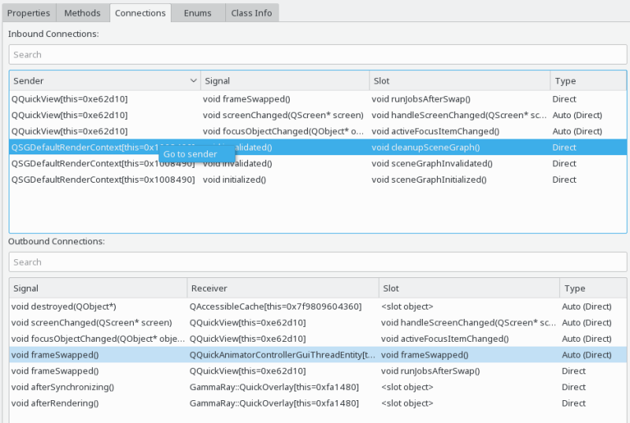

The connections view is available for all QObject instances and shows inbound and outbound signal/slot connections for the currently selected object.

The connections view consists of two identical parts. The upper half is showing inbound connections, that is signals connected to slots of the current objects. The lower half is showing outbound connections, that is signals of the current object connected to other slots or arbitrary functions or lambda expressions. The latter is displayed as "slot object".
Each of the two connection views has four columns:
The context menu on both the inbound and outbound connections view allows you to navigate to the sender or receiver object respectively.
A warning icon is displayed in the first column of the inbound and outbound connections view if GammaRay detected a possible issue with the connection, such as:
Note that these are merely warnings about common problems, but can in some cases actually be valid usage.
The following examples make use of the connections view: